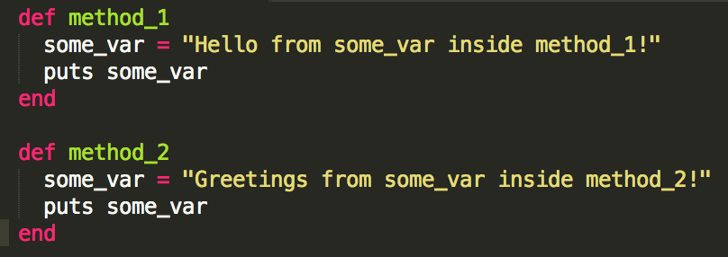
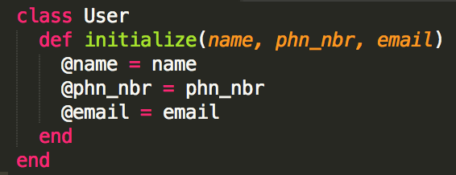
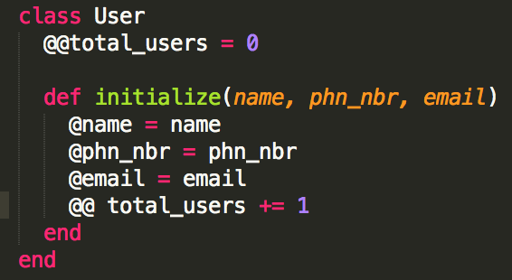

Ruby Variable Scope
Posted on 13 July 2014 by Kyle Daugherty
In Ruby, there are five different types of variable scope. The scope of a variable defines where that variable is visible or may be accessed. Let's "scope" these out one by one, starting with the most commonly used.
Local variables start with a lowercase letter or an underscore - for example, my_var. It is Ruby convention to use snake_case for variable names with more than one word. Local variables are available in the block in which they are declared. For instance, in the following code snippet, the variable some_var in method_1 does not affect the some_var variable in method_2 because they are in different scopes.
Instance variables begin with a single @ symbol. Instance variables differ from local variables because they are available throughout the instance of a class and are bound to a specific object. For example, if a User class that contains an instance variable @name, each instance of that class will have its own value for @name. When one instance of the class changes the value of @name, it only affects that particular object.
Class variables are prefixed with two @ symbols like so: @@total_users. Class variables are shared across all instances of a class meaning that only one value exists for all objects instantiated from the class. So, if one object changes the value of the variable, that new value will now be used for all other instances of that class. Below is an example of this in our User class. We need a way of storing the total number of users, so we've created the @@total_users class variable.
Global variables are depicted with a $ sign in front of them - for example, $global. Global variables are accessible from anywhere in the entire program. Simply put, they never go out of scope. They can be changed from anywhere in the program. For this reason, careful consideration should be given before deciding to use them as they can make debugging a program complicated.
Constants begin with an uppercase letter, but Ruby convention is to use either camel case or underscore-separated all-uppercase words. Constants are values that should not be changed once declared. Although, Ruby does allow a constant value to be changed, but the ruby interpreter will give you a warning message. Constants declared within a class or module are available anywhere within the context of that class or module. If a constant is declared outside of a class or module, then it is assigned global scope. The mathematical constant Pi is an example of when you might use a constant.